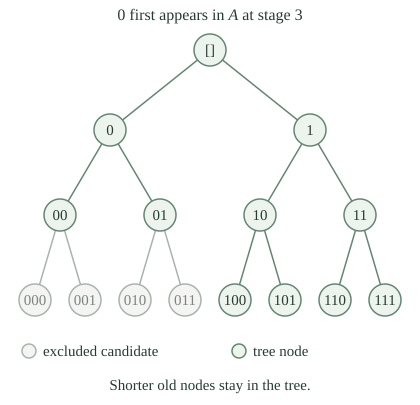

Use the existing binary words and prefix relation. A word \(\sigma\) is a finite list of zeros and ones, with length \(|\sigma|\); \(\sigma\preceq\tau\) means that \(\sigma\) is an initial segment of \(\tau\). Write \(\sigma b\) for appending the bit \(b\). The numerical list code \(u_\sigma\) records the word, and binary validity, length, prefix comparison and append are computable operations.
A binary tree is a collection \(T\) of binary words closed under taking prefixes. Its level \(n\) is \(T_n=\{\sigma\in T:|\sigma|=n\}\). A computable binary tree has a total computable test for membership of a numerical word code in \(T\), rejecting codes that do not describe binary words. Neither nonemptiness nor the existence of extensions of every node is part of this definition.
Record an infinite binary sequence by its set \(X\subseteq\mathbb N\) of positions carrying one. Its prefix \(X\mathbin{\upharpoonright}n\) is the word \([\chi_X(0),\ldots,\chi_X(n-1)]\). A path through \(T\) is such an \(X\) with every prefix in \(T\). Write
A computable path has a total computable bit function \(\chi_X\), equivalently a decidable set \(X\). A path computable from an oracle \(A\) has \(X\le_T A\). This is the same sequence-and-branch correspondence used in the ordinary binary function tree.
For a binary tree \(T\), the following are equivalent: \(T_n\ne\varnothing\) for every \(n\), and \([T]\ne\varnothing\).
A path supplies its own prefix at each length. Conversely, level \(n\) contains at most the \(2^n\) binary words of that length. Nodes at every length make the prefix tree have height \(\omega\) with finite levels. The ordinary König lemma therefore supplies a branch meeting every level; its compatible words determine the required set of one-positions. This existence argument supplies no algorithm deciding which child has arbitrarily long extensions.
Fix disjoint c.e. sets \(A=W_a\) and \(B=W_b\), with their uniform increasing finite stages \(A_s=W_{a,s}\) and \(B_s=W_{b,s}\). A binary word \(\sigma\) belongs to their separator tree \(T_{a,b}\) exactly when, for every \(q<|\sigma|\), both implications hold:
Every test for a word of length \(n\) uses stage \(n\). The bit convention agrees with a separator: a one includes a member of \(A\), and a zero excludes a member of \(B\). Positions not yet constrained by either stage allow either bit.

The specified \(T_{a,b}\) is a computable binary tree.
Decode the candidate word, check that each entry is zero or one, and put \(n=|\sigma|\). For each of its finitely many positions, the two finite-stage membership tests terminate and decide the displayed implications. The joint primitive recursiveness of the stage tests and finite word operations justify this finite algorithm.
If \(\rho\preceq\sigma\in T_{a,b}\), put \(m=|\rho|\le n=|\sigma|\). A constraint in \(A_m\) or \(B_m\) also holds at stage \(n\), by stage monotonicity. At positions below \(m\), the words have the same bits. Thus every constraint tested for \(\rho\) is satisfied. Its entries are binary as well, proving prefix closure.
For each \(n\), define the length-\(n\) word \(\eta_n\) by \(\eta_n(q)=1\) when \(q\in A_n\), and \(\eta_n(q)=0\) otherwise. Then \(\eta_n\in T_{a,b}\), and the numerical code of \(\eta_n\) is computable from \(n\).
The rule assigns one bit to each of the finitely many positions. It meets every \(A_n\)-constraint by definition. Since \(A_n\subseteq A\), \(B_n\subseteq B\), and \(A\cap B=\varnothing\), a member of \(B_n\) is absent from \(A_n\) and receives zero. Thus \(\eta_n\) is a tree node. A bounded loop using the stage test computes all its bits and its list code.
In particular every level is nonempty, so gives at least one path. The computable list of level witnesses has not been asserted to be a compatible sequence of words.
For every \(X\subseteq\mathbb N\),
Suppose \(X\) is a path and \(q\in A\). Some stage \(s\) contains \(q\). Choose \(n\ge s\) with \(q<n\). The prefix \(X\mathbin{\upharpoonright}n\) satisfies the stage-\(n\) constraint, so \(\chi_X(q)=1\) and \(q\in X\). The same argument for \(q\in B\) forces \(\chi_X(q)=0\), giving \(X\cap B=\varnothing\).
Conversely, a separator's characteristic bits satisfy every constraint coming from \(A_n\subseteq A\) and \(B_n\subseteq B\). Each of its prefixes is therefore in \(T_{a,b}\). The equality concerns all paths, without a computability assumption on the separator.
There is a computable binary tree with a node at every length and at least one infinite path, but with no computable path.
Take the established disjoint inseparable c.e. pair and form the specified separator tree. The preceding lemmas prove computability, prefix closure and nodes at every length, hence existence of a path. A computable path would be a decidable separator by , contradicting inseparability.
This is a binary version of the Kleene-tree phenomenon. Deciding any one finite word is a terminating calculation; choosing an infinite compatible sequence can still require a noncomputable set.
This same tree has a noncomputable hyperimmune-free path: every total numerical function computed from that path has a computable bound. Such a member is not computable from ordinary halting.
The code of \(\eta_n\) is computable from \(n\), and \(|\eta_n|=n\). Why does this not already construct a computable path through the separator tree?
The words need not extend one another. If a position \(q\) first enters \(A\) at a stage \(s>q+1\), then \(\eta_{q+1}(q)=0\), whereas \(\eta_s(q)=1\). Both finite words pass their own length-stage tests. Their incompatible bits cannot be joined into one path. In particular the tree from the preceding theorem has computable level witnesses and still has no computable path.
Fix a computable binary tree \(T\) and one of its deciders. For a binary word \(\sigma\) and \(m\in\mathbb N\), define the empty-extension test
This is a total computable test: list the finitely many binary words of the indicated length, compare prefixes, and run the fixed decider. The word \(\sigma\) is extendible if \(\neg E_T(\sigma,m)\) for every \(m\). Its cone dies if some \(m\) passes the empty-extension test. The test at \(m=0\) detects a word outside \(T\).
There is a total computable numerical map \(\delta_T\), fixed once the decider for \(T\) has been chosen, such that for every binary word \(\sigma\),
where \(K=\{e:\varphi_e(e)\downarrow\}\) is ordinary diagonal halting.
On a word code, first check binary validity, and otherwise remain undefined. For a binary word, search \(m=0,1,\ldots\) for a successful empty-extension test and halt with output zero when one is found. This is a partial recursive procedure whose domain is exactly the codes of dying binary cones. Fix one index \(a_T\) for it, before any word varies.
The established constant-run translation into diagonal halting gives the particular map \(\delta_T(u)=c(\langle a_T,u\rangle)\). Its correctness is the displayed equivalence; the map is even primitive recursive for this fixed \(a_T\). Constructing the index does not execute the cone search.
Also, if a cone has an empty extension level, every deeper level is empty: any longer node would have a prefix at the earlier length. Thus failure to have arbitrarily long extensions has a finite certificate.
If \(\sigma\) is extendible, at least one of \(\sigma0\) and \(\sigma1\) is extendible.
Otherwise choose empty extension levels for both children. Increase their lengths to one common level, using persistence of emptiness. Every word extending \(\sigma\) at that level must extend one of its two children, so no such word is in \(T\). This contradicts extendibility of \(\sigma\). The finiteness of the two choices is essential to this common-level argument.
Suppose \(T\) has a node at every length. Define the halting-selected words and their bits by
The selected path set is \(X_T=\{n:b_n=1\}\). These recurrences specify the choices using the fixed map \(\delta_T\). A step asks whether the left child's cone dies; it chooses the right child precisely when that answer is yes.
For every computable binary tree \(T\) with nodes at every length, the specified \(X_T\) is a path and \(X_T\le_T K\).
The empty word is extendible because every level is nonempty. Suppose \(\sigma_n\) is extendible. If the query says that its left cone does not die, the chosen child \(\sigma_n0\) is extendible by definition. Otherwise the left cone dies, and makes the right child extendible. Induction gives an extendible word of length \(n\) at every stage. The words extend one another, so their bit set has exactly these prefixes and belongs to \([T]\).
To decide membership of \(n\) in \(X_T\), an oracle program starts with the empty word and performs the first \(n+1\) stated steps. Each step computes one ordinary index, asks the \(K\)-oracle one membership question, and appends a bit. All those finite operations terminate. The final bit is \(b_n=\chi_{X_T}(n)\), giving a total \(K\)-oracle decision procedure for this very path. The decider for \(T\) and its query compiler were fixed before \(n\) varied.
The low basis theorem strengthens the existence conclusion: some path has its own jump computable from ordinary halting.
The full class of oracles that compute some path through every nonempty-path computable binary tree is characterized by PA degrees. A binary DNC child selector supplies a path program for each supplied tree decider.
Must every path through a computable binary tree be computable from \(K\)?
No. The full binary tree \(2^{<\omega}\) is computable and every set of natural numbers gives a path through it. In particular \(J(K)\), the jump of the halting oracle, is a path but is not Turing reducible to \(K\), by jump strictness. The preceding theorem selects one path with a bound; it puts no bound on all other paths of the same tree.
For \(m\ge n+1\), let the surviving prefixes be the finite set
Compute it by listing level \(m\), restricting its words, and removing repetitions. Several longer words with the same prefix count as one candidate. If \(X\) is a path, its prefix \(X\mathbin{\upharpoonright}(n+1)\) is in this set for every such \(m\). Prefix closure also makes the sets decrease as \(m\) increases.
If \([T]=\{X\}\), then for every \(n\) some \(m\ge n+1\) has
Fix a different word \(\rho\) of length \(n+1\). If it had extensions in \(T\) at every longer length, the binary tree of tails extending \(\rho\) would have nodes at every length. König's lemma would give a path through that cone. Combining its tail with \(\rho\) gives a path of \(T\) different from \(X\), a contradiction. Thus some finite level has no extension of \(\rho\).
There are only finitely many competing words of this length. Take a common deeper level beyond their empty levels; persistence of emptiness excludes every competitor there. The genuine path prefix still occurs. Hence precisely that one candidate survives. This proof establishes existence of a successful search level, without giving an ordinary computable bound on when it first occurs.
The unique-path bit search \(U_T(n)\) tests \(m=n+1,n+2,\ldots\) in order until \(V_T(n,m)\) has exactly one member. It then returns the bit at position \(n\) of that sole word. Each individual test and the final bit lookup is a terminating finite calculation. If no test succeeds, the search remains undefined.
The procedure uses the fixed decider for \(T\). It neither tests whether the tree has a unique path nor uses a decision about infinite extendibility.
If \(T\) is a computable binary tree and \([T]=\{X\}\), the specified search \(U_T\) is total and \(U_T(n)=\chi_X(n)\) for every \(n\). In particular \(X\) is computable.
For any input \(n\), guarantees a successful level, so sequential search over the total finite test terminates. At the first successful level, the genuine prefix of \(X\) is among the candidates, and there is only one candidate. The word returned by the algorithm must therefore be \(X\mathbin{\upharpoonright}(n+1)\), whose final bit is \(\chi_X(n)\).
Listing finite levels and their distinct prefixes uses ordinary computable finite operations, and search over a total computable test is partial recursive. Termination on every \(n\) makes this a total computable bit function. No description of \(X\) was provided to the program; its uniqueness proves that the finite search finds the correct bit.
Can the last theorem replace “exactly one path” by “at most one path” and still assert a computable path? What happens to the specified search on \(T=\{[]\}\)?
No. This finite tree is computable and prefix closed, and it has no path. For input zero, every tested level has length at least one and is empty, so \(V_T(0,m)\) never has a single member. Thus \(U_T(0)\) diverges. The existence part of the promise ensures that the true prefix is always present; uniqueness ensures that all its competitors eventually disappear.